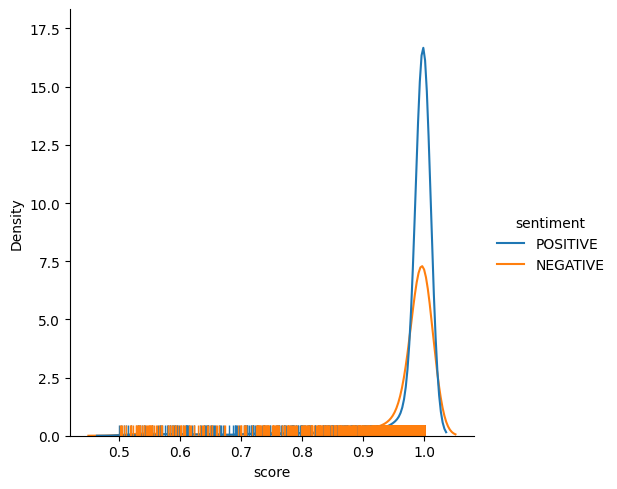

Review vs Rating: Two Case Studies
Do you review like you rate?
Reviews do not always give the clear picture of the rating. In this article, we will look at two case studies involving datasets with reviews and ratings.
Case Study 1
About the dataset
The ‘ShopperSentiments’ dataset is sourced from Kaggle. It contains reviews and ratings concerning products on a fashion items portal. This is a labelled dataset with both ratings and reviews amenable to classification. The classification exercise and the post analysis throws up some interesting results on the consistency of reviews and rating.
Approach
We are concerned with only two features of the dataset: ‘reviews’ and ‘ratings’. We collapse the 5-point rating into a binary label: 1 for ratings 1-3 and 0 for 4-5. Thus, we relabel the dataset to identify unhappy customers.
The logistic regression classifier throws up satisfactory results. However, what arouses our curiosity are the false positives and the false negatives – instances where the classifier is going wrong.
We use a library called LIME (Local Interpretable Model-agnostic Explanations) to do the post-modelling analysis.
Observations
Below is the LIME interpretation for false negatives. These are negative reviews that could not be identified by the classifier.
Closer examination reveals that the classifier has gone by the positive sentiment of the words. However, the customer rating (in the range 1-3) is inconsistent with the verbalized positive sentiment.
Next, we look at the false positives. These are the positive reviews identified by the classifier as negative.
Again, we see that words are inconsistent with the positive ratings (4-5) for these instances.
These inconsistencies are nicely captured well by LIME and displayed.
Case Study 2
About the dataset
This is another Kaggle dataset called the TripAdvisor Restaurants Info for 31 Euro-Cities. This is a restaurant reviews dataset covering many restaurants. There are reviews as well as ratings in this dataset. This dataset is also amenable to classification.
Approach
For this dataset, we use a pretrained sentiment analyzer on the verbalized reviews. Later, we try fitting an LSTM to our dataset. Both these exercises reveal interesting observations.
We use KDE with rugplot to visualize the distribution of the sentiment scores.
Observations
We closely examine some rating levels and note interesting aspects.
A rating of 3
This is the most ambiguous rating of all the five ratings. A person might not want to give a too bad or a too good rating but wants to be specific in his/her review. This rating does not express the sentiment that we assume. A rugplot explaining this reason is as below.

While both the positive and negative sentiments are strong (high scores), the probability of a positive sentiment appears higher.
A rating of 3.5
This rating is slightly clearer from ambiguity and is a bit oriented towards the positive review side. A large number of customers really express a positive sentiment by their rating with a lot of reduction in the negative reviews. However, there still remains some proportion of negative reviews to add to some ambiguity. The rating is shown in the rugplot below.
A rating of 2
This rating is clearly on the negative side of reviews. The negative reviews show a higher peak compared to the positive reviews which are lesser in number. Surprisingly, some reviews express strong positive sentiment even at this low rating.
A rating of 4
This rating is clearly on the positive side with only a small number of reviews contributing to the negative side. The curve of the negative reviews is flatter and spreads as a long tail towards milder sentiment score.
A rating of 5
A major portion of the reviews are positive which shows high consistency. Interestingly, there is a very small fraction of negative reviews giving some inconsistency; the distribution however is very flat and long tails away towards milder sentiment.
The classification exercise
The classification exercise unsurprisingly gives us poor results. This is due to the ambiguity of the ratings in the middle ranges. This ambiguity also makes it difficult to pick an appropriate ‘binarizing threshold’.
Takeaway
The LIME analysis shows that people are quite prone to a wide interpretation of ratings in the middle ranges.
From the distribution plots, it is apparent that people who rate higher are more consistent.
Thus, a rating can perhaps mean the probability of a customer being satisfied. Accordingly, a customer who rates 4 (out of 5) has a 0.8 probability of being happy with the service, and a person who rates 2 has a probability of just 0.4 of being happy.
This is contrary to the intuitive understanding that a rating indicates the scale of happiness of a customer.
One way to make ratings consistent is to give a clear meaning to the rating scale and specify rating guidelines.